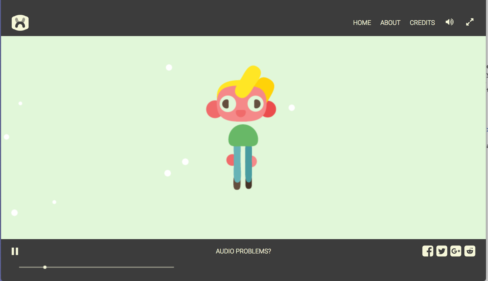

The Chrome experiment I found most intriguing was "Solace: an Interactive Film" by Evan Boehm and Nexus Studios. I thought this experiment was really interesting because it was an interactive film which told a story while allowing you to take part. This was unlike most of the other experiments that just allowed you to move things around. Overall, I thought it was a really fun and innovative way to take a story and video to a new level.
Here are some of my favorite aspects of experiment:
Here is a screenshot from the video. Interesting characters such as this one appear throughout the video that you can interact with.
This is the audio from the first 20 seconds of the video. The entire video plays out as this type of friendly conversation.